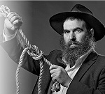

From a “Mixed Marriage” to Seminars Around the Country
R’ Ami Baram became a baal t’shuva while his wife did not. At first, he tried looking out for himself and formed a circle of couples in a similar situation. Then, he turned this into a successful organization. * “Hiskashrus” has arranged seminars for hundreds of mekuravim. In an interview with Beis

The organization has saved many relationships and in some cases, saved the t’shuva process. In classes that he gives to couples with religious gaps between them, he explains that they have to do the work themselves. He can only give them the tools that will help them approach the work in the right way.
Ami Baram is aware of the tremendous responsibility he bears. He and his wife have helped numerous couples in crisis over religious matters. Their experience is put to good use in their workshops.
“It is a very complicated subject with many aspects to it,” begins Baram:
Generally speaking, there are two stages to this process. In the first stage, the couple does not yet realize that they are in the midst of a process. It takes a couple a long time to realize what is going on. At first, one of them starts to take an interest in Judaism and begins to gradually incorporate aspects of a religious lifestyle. Their spouse is sure that it’s a passing fad.
For most couples, this goes on for about a year, during which the other spouse rejects the new reality. People say to themselves, “This can’t be,” and “This is not happening to me.” They don’t realize that their spouse is serious and yet they need to get used to the new reality.
In the second stage, people begin to realize and accept that there is a new reality, and then they feel that a bomb has exploded in the house. They suddenly understand that this is not a passing phase, but a way of life that their spouse has decided to adopt and things won’t be the same anymore. At this point, they have to decide what they are going to do about it.
The problem that we address is that most couples who find themselves in conflict over one of them getting interested in Judaism feel that they are alone. In the first period they are confused and don’t know that today there are many couples in the exact same situation. Until they digest the new state of affairs, they experience a significant breakdown in trust towards their spouse. They feel betrayed, as though their spouse has a new relationship – with G-d – and this relationship is more important to the spouse than they are.
The tension lies in the spouse feeling marginalized, as the other person focuses his or her attention on the new relationship with Judaism. This has wide-ranging ramifications in areas such as whether or not to go to the beach on Shabbos with the family, where the family can eat out, and which friends to socialize with. Suddenly, life cannot continue as it always did. A spouse feels that their relationship has become of secondary importance for his or her partner.
What happens at this point?
Those who come to us learn how to take a different route. Those who do not get the proper guidance at this stage find themselves with a growing feeling of distance between them. The cracks widen. In most cases, either one of them gives in, thereby creating an unhealthy relationship of appeasement and a feeling of sacrifice, which ends up exploding down the road, or they continue living with constant bickering, engendering tension and resentment. The main losers are the children, whose emotional well-being can be adversely affected.
What do you mean when you say that those who come to you take a different route? What do you offer them?
We have no magical elixir. People come and think we will hand them a solution that will enable them to live in peace. We make it clear that it is they who must do the work, but we provide the wherewithal. First of all, we clarify the situation for them, getting them to look in the mirror, for maybe the first time, and realize what is going on.
Once the couple understands their situation, we explain that they need to make a responsible choice. If they don’t want to break up the home and they want to continue living together, they have to know this will take a lot of work and they need to be willing to roll up their sleeves and do it. You can’t force anyone. Nobody does this because they feel forced; it’s their free choice. If a man or woman wants to maintain the relationship, he or she needs to know it is possible. It’s the choice of the couple and they have to be ready to pay the price. This is the purpose of a marital relationship.
In a union you need to have feelings towards the other person and to care about them. A spouse who feels threatened does not feel whole and is not capable of taking the other into consideration; a person who feels whole in his own space, is capable of giving of himself. He can learn to slowly agree to the new reality and to stop feeling like a victim who gave in just for the other person.
How do you explain to someone who never changed anything in his life that he has work to do?
When couples come to a workshop, they meet other couples like themselves. This greatly allays the fears of the side that is worried that the whole idea is to gang up on them and pressure them to do t’shuva. We don’t force anything on anyone; we explain that the reality cannot be denied. This is the new state of affairs and choices need to be made.
I tell couples, “You can break up and leave.” But if someone came to us, apparently he/she doesn’t want to do this. “If you don’t want to break up, we have many tools that will enable you to build your home.”
That’s the truth. Building a new relationship is a joint decision. They need to acknowledge that what they had is gone. They cannot deny the reality and they need to address the question of: What do we do now?
Professional therapists work with the premise that in most instances, when one spouse made this unilateral move and left the other spouse behind, it can be assumed that the couple had a problem previously. At the moment, the problem appears in this form, but the problem was actually there before. If it did not come up as an interest in Judaism, it would have come up when the husband wanted to go play soccer instead of going on an outing, or when the wife wanted to go out with her friends.
However, the difference when it comes to t’shuva is that the friction is greater since it affects all aspects of life, even the smallest. A person who does t’shuva is convinced that everything he does is done in the name of holiness. He is working with the assumption that what he does is fine and the problem is with his spouse who is unwilling to accept the truth.
JOINING GASHMIUS WITH RUCHNIUS
The Hiskashrus organization holds workshops throughout the year that includes ten sessions for couples with religious differences. These workshops cater to couples who want to rebuild their relationship under these new conditions.
The psychologist Esther Meizlich of Kfar Chabad is on the list of professionals who work with Hiskashrus, as is R’ Yitzchok Arad, Dr. Ilana Israel, Yonatan Segal and Mrs. Avital Baram who is a personal and group trainer, Mrs. Yael Weissman, R’ Tomer Roithaus and his wife, and R’ Assaf Yechezkel. They each offer their expertise and experience, as do additional therapists.
***
R’ Baram:
The idea is to enable every couple to find their own way. In one session, we introduce couples to other couples who have been living this way for years, i.e. one spouse became religious, and they decided to find a way to continue harmoniously together. Every couple chooses their own way and many couples have discovered very creative ways to find a common ground that is acceptable to all sides.
What happens when one spouse is not willing to compromise?
Every so often we deal with extreme situations when one spouse digs in his or her heels, or alternatively, starts to make progress too quickly. In these cases, we refer them for individual therapy in the hopes that this will help, but it doesn’t always work.
We have a couple that we ended up sending for individual therapy, but unfortunately it was not helpful and they stopped. We are still trying to reach them through having a personal connection, but someone who does not want to help himself cannot be helped.
In most instances, a couple comes to us at the point when they both realize that they have a serious problem that needs addressing. They know that if they don’t address it now, things will become unbearable.
How do you unite polar opposites?
Just as we unite gashmius and ruchnius, which requires a lot of learning and thought to be successful, the same is true for relationships, in that the way to succeed is by shifting paradigms and starting to look inward. Without this inner work, it won’t happen. For these couples though, it is critical, because they don’t have the option of not working on the relationship. In the workshops, they discover a very important word, i.e. responsibility, towards the home and towards their children.
Each one has his world, his career, his hobbies, and a couple needs to learn how to respect and support the other in his world. In the middle, there is the world they share which they need to learn how to cultivate. It is in those shared areas that we work and learn how to find points of commonality about which there is no conflict. We focus on that. The avoda is all about “a little light dispelling a lot of darkness.”
The work of a husband who became religious is to leave his wife alone and stop wanting to change her. As long as there is the attempt to change the other one – because I know what is good for him/her – the more opposition there is. This is where the real t’shuva process begins, in an inner way which requires that I put what I want aside, and see where I am needed. For when we start with inner change by looking inward, we understand that what is driving us is fear and fear does not allow space for the other at our side.
If the husband became religious, he cannot demand anything of his wife. He cannot force on her the way of life that he wants. Here is where the more subtle, inner work begins; starting to live with simcha in the proximity of someone who is different and living contrary to our choices. When a person supports his spouse, even when she does things differently, she is automatically positively influenced by him.
It’s a process that requires a lot of time and work. So in the meantime, we focus on communication techniques and try to come up with creative ways of handling the new reality.
So what you tell someone who became religious and who wants the marriage to continue, is that he or she might have to constantly give in?
“Giving in” is a misnomer. Because when I give in, I anticipate being paid back. I would not use that concept, as that gets into a victim mentality, i.e. the person who suffers for his principles, and this is one of the destructive forces in relationships and life in general.
I would use the word responsibility. Responsibility is the understanding that I have a family and I make my decisions freely. It’s a constructive process in which even if I don’t presently see the results, I know that I am building my home and maybe, in the future, I will get to see the results.
There is a process here with a goal that the person is willing to strive for. It’s not because something was taken from me and now I am suffering, poor me, but because I have a wife and kids and I seek their welfare. And sometimes, this comes before my welfare and this might be what is genuinely good. When you are trained to think like that, the concessions are not concessions. I realize what is important is this moment. What is important is the process, and we need kabbalas ol and can’t behave irresponsibly in a “what is due me” fashion.
It sounds like all the work is being done by the one who became religious and the other party has no responsibilities.
When one spouse starts becoming religious, we often hear the line, “We started out irreligious and you are the one who decided to change.” Actually though, when working on a relationship, there are no sides. Both are in this together and both need to put in the same amount of effort. From the spouse who is still not religious, the work is to agree and then support the t’shuva process. He has to live with that which is the opposite and different than him just as the religious one does. Oftentimes, he is afraid of what people will say. There is fear about a changing image. We live in a secular environment and now you are starting to change. There are changes in kashrus, Shabbos, vacations, cultural activities and it is no longer the way it used to be.
The one who became religious has to understand that she chose this when she was married already, and she has a family, and therefore, especially as a religious person, work is demanded of her, with lots of listening and patience. She needs to temper the enthusiasm even though it is hard to do. It is particularly difficult for one who is first starting the t’shuva process.
NO SHORTCUTS – IT REQUIRES WORK!
The motto that everyone who comes to Hiskashrus hears is “there are no magic words.” R’ Baram explains that first and foremost a person needs to know that there is no single solution that he can follow.
***
We give them the tools to come up with creative solutions to make it work. For example, Shabbos – in the public domain of the family, Shabbos is to be observed – and in the personal sphere, each one makes his or her private choices. Life is always providing us with upsets and tests and it is hard for us to accept that which doesn’t suit us. And here, it’s happening in your own house, with your own children, and you need to stand there and smile. It requires deep work, while constantly restraining yourself in relation to your environment. It’s a growth process, because those who opt to do the work end up with very nice homes. Under the circumstances, you can’t run away from the work. You make Kiddush on Friday night and then the family goes to the beach …
Where then, is the point of connection?
The couple comes to an agreement. Beforehand, they did not know how to handle things and then they discover what works for them. Each one learns to incorporate the other. When working together to create a joint reality there is a lot of relationship development. There is so much communication that it builds up the relationship, because you need to discuss every detail and try to understand one another. If you have the right tools, you create a new space and you turn the new situation, which seems to be less than optimal, into an advantage.
And they should live this way forever?
The premise is yes. The couple needs to accept one another and to realize that it is possible that the spouse might never change. But we know that any situation can change. If we go beyond our comfort zone, the spouse might very well do the same. If we want to influence someone, we cannot force things on them; we need to get that person to feel the delight in it and then, maybe, he or she will be open to talking. If you want your wife to keep Shabbos, you need to show her how you make Shabbos a pleasure for her.
That is what I mean when I say that in order to change nature, you need avoda that goes beyond reason; to remember that our complicated existence is not by accident and this process is being overseen. This is the avoda of bitachon. If we succeed in looking at the relationship this way and operate with the knowledge that G-d gave us this conflict, we reveal that the conflict is only external. The avoda is to stop upsetting the spouse and then the spouse will start to draw close. This is precisely the Geula process, how the Rebbe trained us to live.
A baal t’shuva is excited and he needs to know that his t’shuva is not just expressed in external changes.
SOMETIMES A SHLIACH NEEDS TO SLOW THE PROCESS
What is the role of the shliach?
The role of a shliach is usually to help a mekurav progress religiously, but in this case his job is sometimes to slow things down and teach the mekurav how to undertake things gradually. The mekurav has discovered Judaism and everything seems magical to him and he wants to do it all. However, he needs to be shown how to go about it. You can’t tell someone who wants to take on all the hiddurim not to do so, but sometimes you are sitting at a farbrengen and all the mekuravim “gang up” on someone like this to start acting like an old-time Lubavitcher when, for him, the avoda is to wait and to allow his wife to catch up. If he takes this thing on now, he will lose his family. It’s extremely hard because it goes against the grain of the shliach to slow him down, but there are times when in order to build properly, so that the entire family is on board, he needs to restrain the mekurav.
How do you know when yes and when not?
You can’t decide on your own. You need to consult with a rav, but you need to know how to ask the questions and explain the situation. These often involve halachic questions, which is why the shliach cannot pasken on his own. I would like to single out Rabbi MM Gluckowsy, Rabbi Yosef Chaim Ginsberg and Rabbi Yitzchok Arad. They are familiar with these issues and know how to give guidance. We have seen how their counsel saved homes. Shluchim, who don’t understand the complexities and make their own decisions, can make critical mistakes with long-term ramifications.
Often, the baal t’shuva is looking for a greater degree of stringency in halachic matters and the natural inclination of the shliach is to accommodate that inclination. The shliach wants to see results, what is known in Chabad as “seeing more sirtuks” in the k’hilla. But if a shliach seeks the welfare of the mekurav, then he needs to be able to tell the mekurav the truth, and sometimes the truth is that he needs to take it slower. The shliach needs to encourage him to grow from where he, the mekurav, is at and not where the shliach is at. This point is critical, because the shliach needs to understand the dynamics of the house and see how to make the transition without destroying the home.
How do you manage to get through to the spouse that is not interested?
Usually, after a workshop or seminar, the husband or wife who is not religious comes and thanks us. They feel that we saved their home. It’s the baal t’shuva who has a bit of a problem with us, because he suddenly hears how he needs to do avoda and sometimes we say things that aren’t pleasant to hear.
I just met a couple at a seminar that we held, where the husband, a baal t’shuva, simply did not “see” his wife. I sat with him an entire night and told him that he must first understand what t’shuva is, how one does t’shuva, in order to attain the right to demand that his wife change. I showed him how he was so preoccupied with his personal progress that he had no idea what it means to get close to Hashem.
Here was someone who told him the truth and it wasn’t easy, but in the end, he began to listen and to understand that he had to change his approach.
We hold regular workshops for every circle of couples that are in touch with us, for example, before sensitive times like Pesach, when there are many conflicts. There is a very strong personal connection between the couples, and we are able to successfully meld all the couples into a cohesive group.
What about chinuch?
Chinuch is the most complicated area for couples with religious differences. The point is that a child can do well if his father is religious and his mother isn’t, or vice versa, but he cannot thrive if his parents fight. Naturally, each parent tries pulling in their direction and when the child feels that he is the focus of their fight, he usually rebels against both parents and pulls away from both of them. A child cannot live in a home where his parents fight and he is in the middle. The job of the parent who became religious is to try and give the child warmth and love and allow him to go on his own path. The parent needs to allow the child to come to him, rather than trying to forcibly pull him. When a parent tries to force him, it is counterproductive because it engenders opposition from the other parent and the child cannot relate to this.
As in the chinuch of any child, you need to provide him with the conditions for growth; when you plant a tree, you need to water it and prune it and pray that it will grow well. The less you intervene, the better the results. As in every area, the less I want something as a selfish superficial desire, the more room there is for what is truly desirable.
So a baal t’shuva has to constantly bite his tongue?
That’s an external gesture. He needs to be in a place of bitachon. It is like the Rebbe explains: the avoda of “thinking positively so it will be positive” is when a person sees that he has debts and he is under pressure and he really doesn’t see a solution. If he looks at it negatively he isn’t able to see the gift that Hashem provided him by putting him through this test. But when he realizes that all is good and that he has an opportunity here, he suddenly finds a way out of the problem.
The same is true for relationships where a positive outlook is not just a spiritual thing, but the best way to get out of a crisis. When a person bites his tongue, he isn’t calm. He’s constantly thinking, “What’s going to be with the kids when they grow up?”
When he looks at things positively and doesn’t worry, he draws the good to him. When a person radiates simcha and bitachon, his future becomes better. If you are happy and you project it, your influence in the home will be greater. You need to make the house a warm, pleasant place. Then all will be well, and they will want guidance from you.
In one of our encounters at a workshop, we bring older couples who live this way. We have three couples like this, each with a different flavor.
With one couple, the wife came from a religious home and after dropping a religious lifestyle she married. After a few years, she decided to do t’shuva. They chose not to demand any changes from their children. The wife left the kids alone and projected a lot of confidence in her choice. They have been living together like this for twenty years and they have a wonderful relationship. Today, they can laugh at the hard times. The surprising thing is that their three children became baalei t’shuva when they grew up. It’s a classic example of a relationship with few fights. The children thrived in the healthy atmosphere and chose t’shuva on their own. By now, her husband is Shomer Shabbos, and although he does not look religious, he is very religious in many ways.
With another couple, the husband became a baal t’shuva and tried to force his journey on the household. His family did not take this well. The children were put into religious schools, but sadly did not want to be there. Wherever he tried to force things, he lost. Today, he realizes what he did and is trying to fix things. He is someone who can explain how important it is to be inclusive of differences and how much this does for a child when he reaches the point when he is doing his own searching.
With the third couple, the husband decided to become religious at age 40. The couple came up with all sorts of ways to build common ground. They talk about their experience from a place of wholeness, since they dealt with each issue in full agreement. And although it wasn’t all smooth and simple, they managed to find a way so that the wife is willing to meet her husband part way and take his wishes into consideration.
In conclusion:
Many couples come to us and they want answers. There are no answers that we can provide. There isn’t one approach. Every couple has to find what works for them. They need to find the tools to develop communication, building and understanding between them, and they’ll find the answers themselves.
FROM A “MIXED MARRIAGE” TO SEMINARS AROUND THE COUNTRY
When R’ Ami Baram speaks about “mixed marriages,” he is speaking about himself. When he met his wife, neither of them was religious. He started taking an interest in Judaism in their first year of marriage, and the new couple found themselves dealing with big differences between them that hadn’t been there previously.
They found other couples like themselves and began spending Shabbos together. Then they went to workshops with psychologists and marriage counselors. Five years ago, they started Hiskashrus together.
“We saw that there was nothing out there for people in our situation,” he explains. “Whatever exists out there leans towards one side so that the other spouse always feels marginalized. Take for example shul attendance. It’s no simple thing to bring an irreligious spouse to shul or any other Torah venue. It seems too threatening. I felt I had to create a framework that would be similar to what she was familiar with. To do this, I emphasized the experiential and artistic side of religion.
“I brought aspects that she was familiar with from the world of Judaism. Together, we began doing art projects and meditation. The goal was to create a non-threatening atmosphere. We arranged Shabbasos and meals together for couples in the same boat, and it was great.”
At first, Hiskashrus addressed couples with religious differences, but the seminars were quickly adapted so they could be open to the public at large. Today, hundreds of mekuravim from all over the country, no matter their outlook, attend the seminars.
Sholom Ber Crombie. "From a “Mixed Marriage” to Seminars Around the Country." Beis Moshiach, no. 846 (August 17, 2012).